Music
Production
Pre-produzione, arrangiamento e programmazioni. Diamo forma al brano, rispettando la tua identità artistica.
Parliamo della tua musicaCALTANISSETTA, SICILIA · INDEPENDENT PRODUCTION
La tua musica, dallo studio al palco.
Produzione musicale e progettazione tecnica di spettacoli live.
MUSIC & SOUND
Un percorso costruito intorno al tuo progetto. Dalle prime scelte sonore alla versione pronta per essere ascoltata.
Pre-produzione, arrangiamento e programmazioni. Diamo forma al brano, rispettando la tua identità artistica.
Parliamo della tua musicaRegistrazione di voci e strumenti, editing, comping e reamping. Cura della performance e del suono, in ogni sessione.
Organizza una sessioneWorkflow ibrido, equilibrio e definizione. Finalizziamo la produzione e prepariamo i materiali per la pubblicazione.
Porta a termine il tuo branoARTIST DEVELOPMENT & PROJECT MANAGEMENT
Musica, immagine e live: un percorso coordinato dal team Emme Studio, costruito intorno a te.
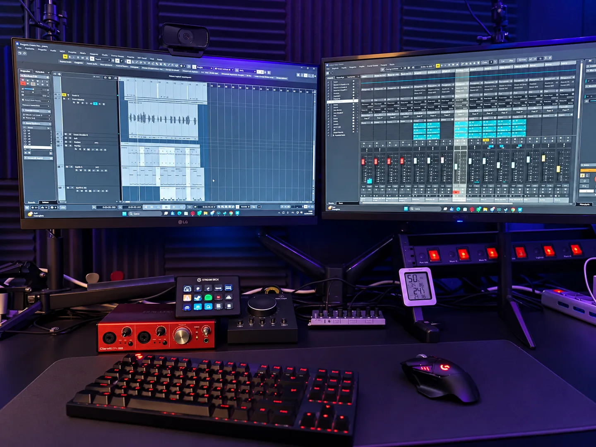
Emme Studio · Dentro il lavoroIDEA · IL TEAM AL TUO FIANCO
Ascoltiamo la tua musica, definiamo gli obiettivi e mettiamo a fuoco ciò che rende riconoscibile il progetto.
Ascolto e reference · Identità artistica · Piano di lavoro
Esplora Artist Development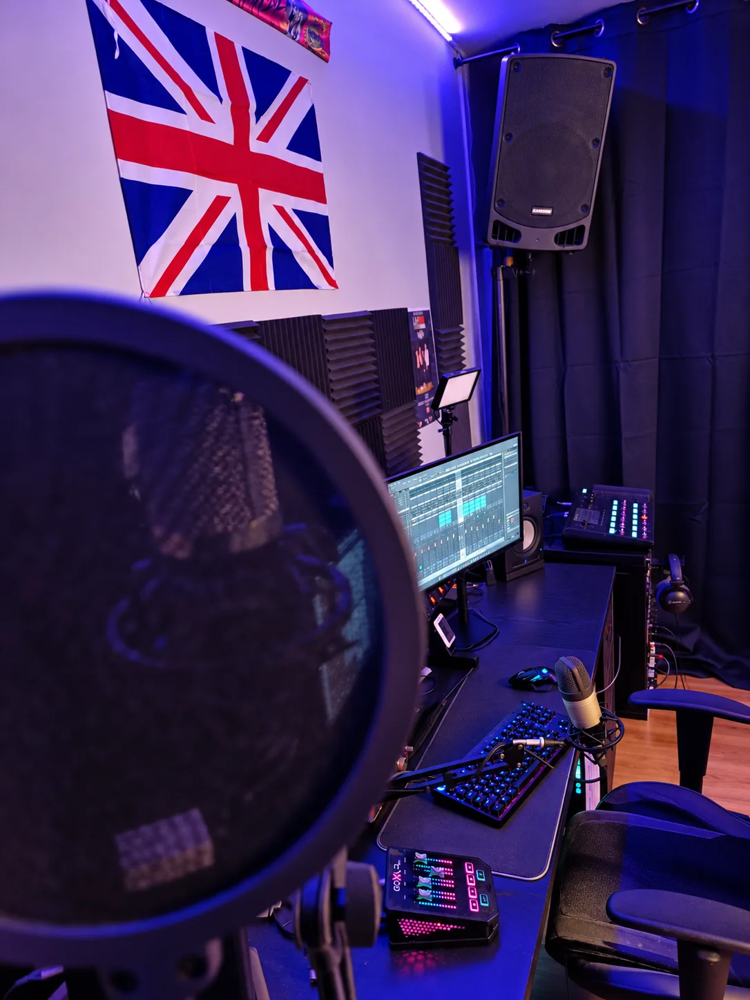
Emme Studio · Dentro il lavoroPRODUZIONE · IL TEAM AL TUO FIANCO
Dall’arrangiamento alle registrazioni, fino a mix e mastering: coordiniamo il lavoro musicale e le persone coinvolte.
Pre-produzione · Recording · Mix & mastering
Esplora Artist Development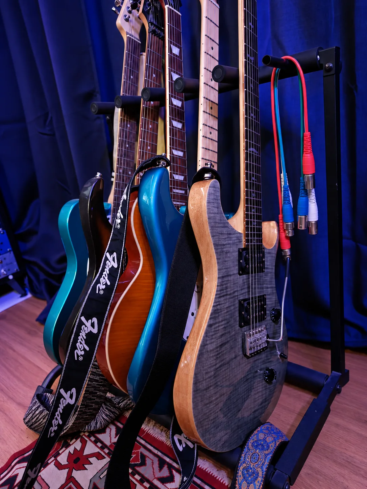
Emme Studio · Dentro il lavoroIDENTITÀ · IL TEAM AL TUO FIANCO
Mettiamo in relazione musica, immagine e racconto del progetto, coordinando i professionisti necessari e i materiali visivi.
Direzione creativa · Foto e artwork · Coerenza del progetto
Esplora Artist Development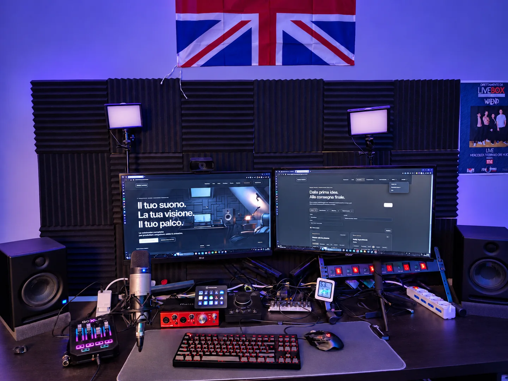
Emme Studio · Dentro il lavoroRELEASE · IL TEAM AL TUO FIANCO
Organizziamo tempi, materiali e consegne per la pubblicazione, con un piano costruito sulle esigenze del progetto.
Calendario uscite · Materiali · Distribuzione
Esplora Artist Development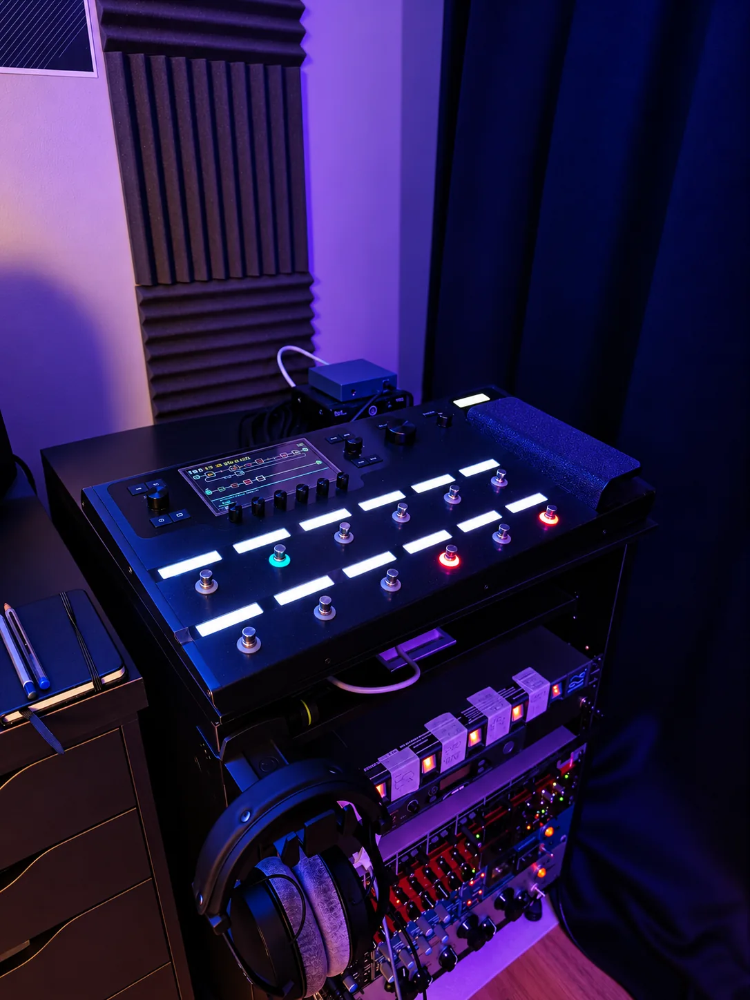
Emme Studio · Dentro il lavoroLIVE · IL TEAM AL TUO FIANCO
Portiamo la visione musicale nello show: sequenze, playback e sincronizzazione, in coordinamento con band, service e regie.
Preparazione show · Sequenze · MIDI & timecode
Esplora Artist DevelopmentOgni artista ha il proprio punto di partenza. Definiamo insieme le attività da seguire e i professionisti da coinvolgere.
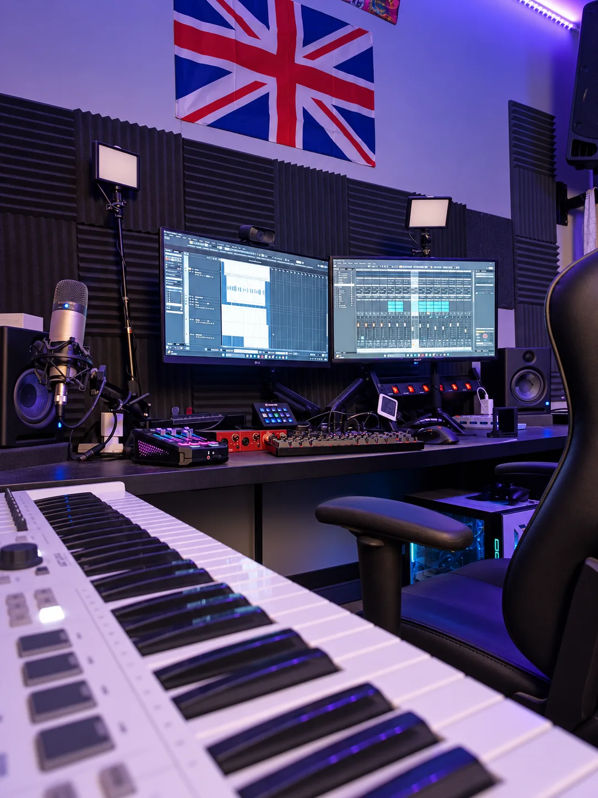
THE STUDIO
Emme Studio nasce a Caltanissetta da un'idea di Marcello Lachina, chitarrista e produttore musicale.
Produzione digitale, lavorazione ibrida e ascolto: un approccio che unisce sensibilità musicale e preparazione tecnica, dalla voce alla band.
ConosciamociINSIDE EMME STUDIO
La sala, gli strumenti e i dettagli del nostro lavoro. Esplora tutti gli spazi di Emme Studio.
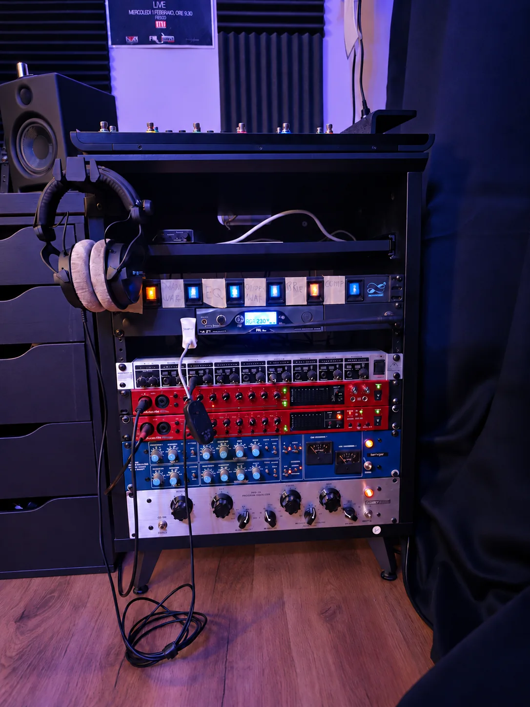
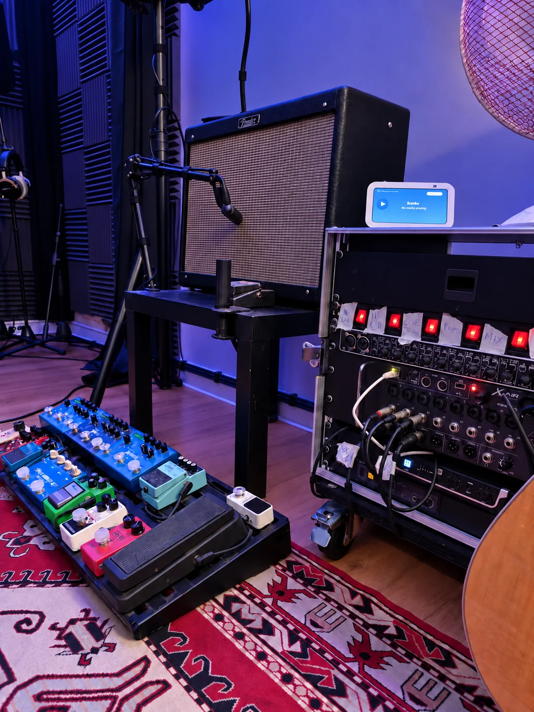
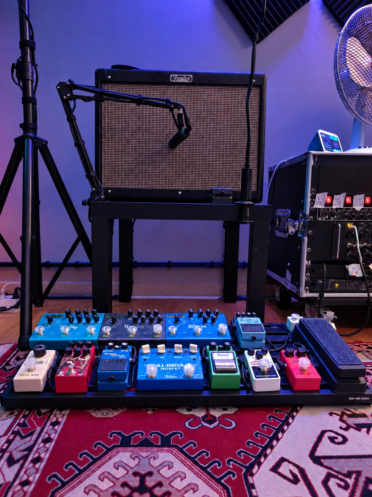
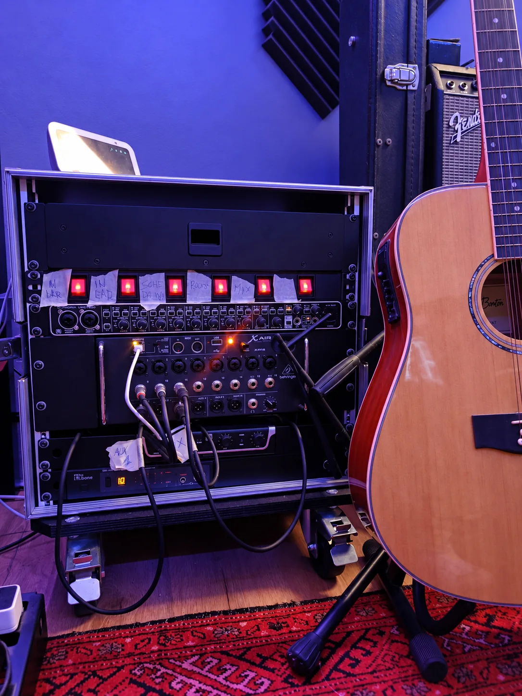
LIVE SHOW PRODUCTION
La produzione continua sul palco. Prepariamo la componente musicale e i sistemi di sincronizzazione dello show, in coordinamento con il service e le regie.
Progettiamo il tuo liveMUSIC / TECHNOLOGY / STAGE
Multitraccia, click e cue per la band.
Program change, LTC/MTC e sincronizzazione con luci e visual.
Configurazione dei sistemi, prove e verifica del flusso dello show.
LISTEN & WATCH
Ascolta la selezione di produzioni e guarda i contenuti video già presenti nel nostro portfolio.
THE PEOPLE BEHIND THE SOUND
Competenze musicali, tecniche e visive che si incontrano intorno alla tua idea. Questo è il team di Emme Studio.
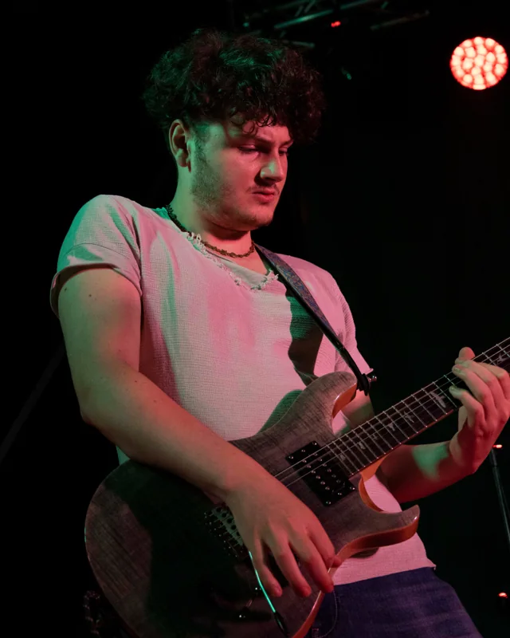
FOUNDER · MUSIC & LIVE PRODUCTION
Produzione musicale, chitarre e progettazione tecnica degli show live.
Chitarrista e produttore musicale, alterna lavoro in studio, produzioni live e insegnamento. Cura produzione artistica, recording, mix e arrangiamento, accompagnando artisti e cantautori dalla pre-produzione alla pubblicazione.
La sua formazione comprende Chitarra Classica al Conservatorio di Caltanissetta e Chitarra Pop/Rock al Conservatorio “A. Scontrino” di Trapani.
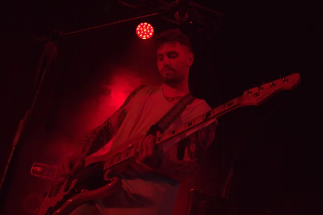
AUTORE · PRODUCER
Scrittura, produzione e sviluppo artistico di brani originali.
Autore e producer, lavora su melodie, testi, strutture e arrangiamenti, con attenzione all’identità sonora e alle caratteristiche espressive di ogni artista.
All’interno di Emme Studio contribuisce alla creazione di produzioni originali e allo sviluppo di brani inediti e percorsi artistici personalizzati.
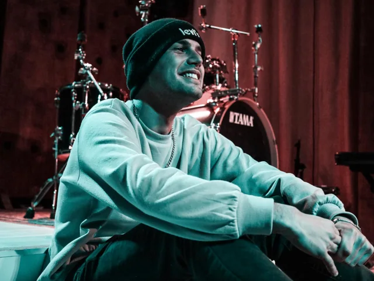
MIX ENGINEER · SOUND DESIGN
Produzione, ricerca sonora e finalizzazione audio.
Mix engineer e sound designer laureato in Musica Elettronica, specializzato nella produzione, registrazione e finalizzazione audio professionale.
Lavora in diversi contesti musicali, dal pop al rock, dall’indie al rap, unendo competenze tecniche e sensibilità artistica con attenzione alla spazialità e all’equilibrio del mix.
LET’S CREATE SOMETHING
Un brano, una sessione, uno spettacolo.
Parlane con noi.